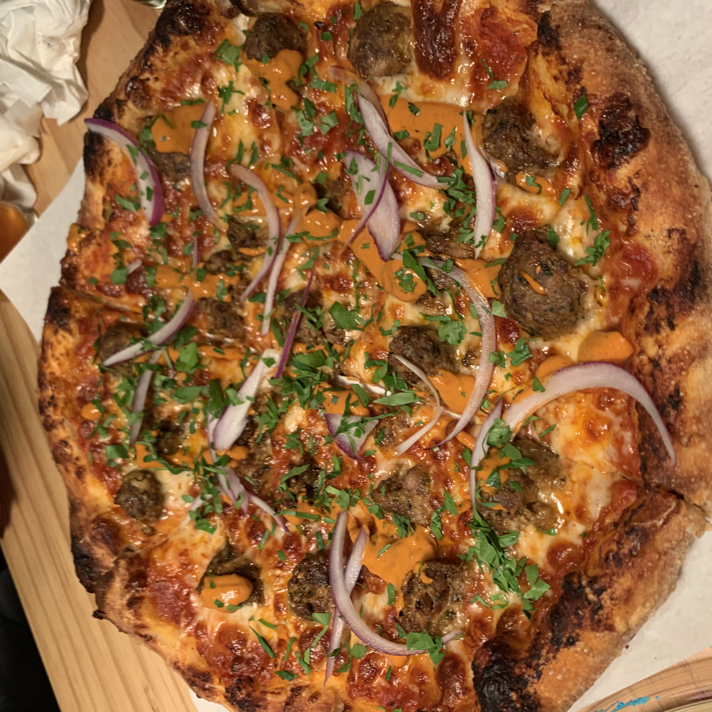
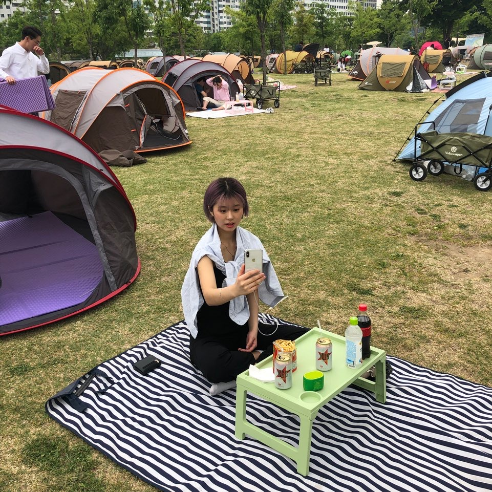
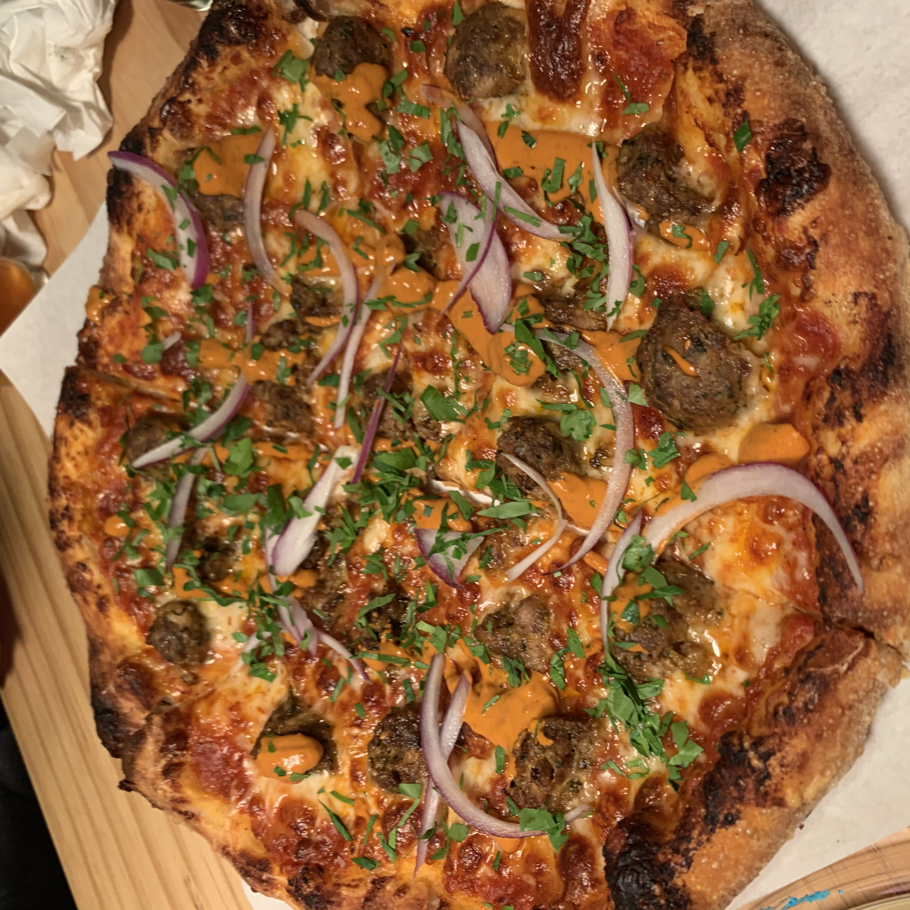
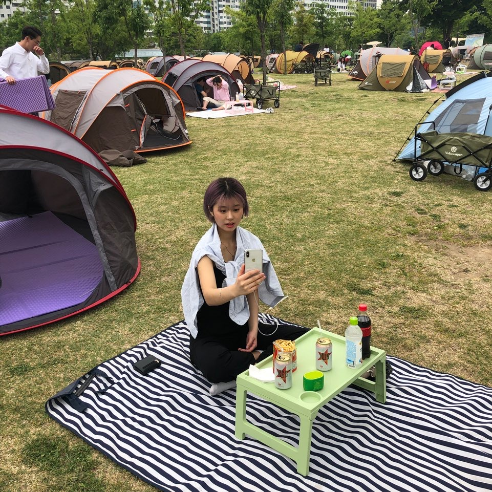
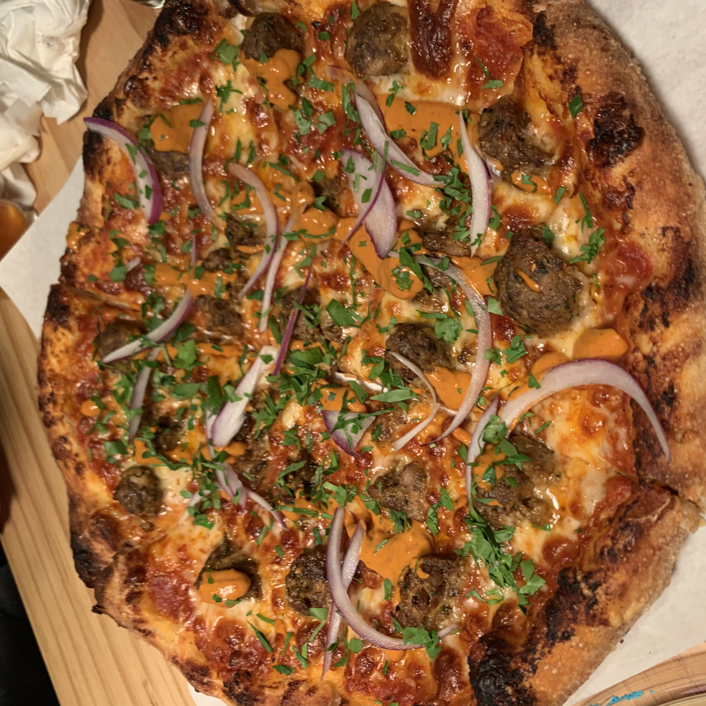
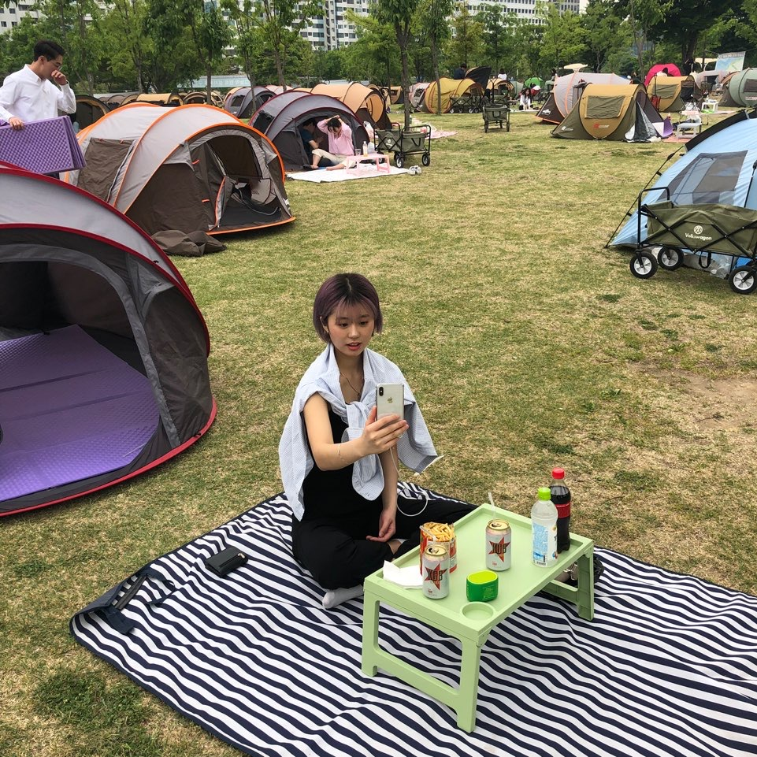
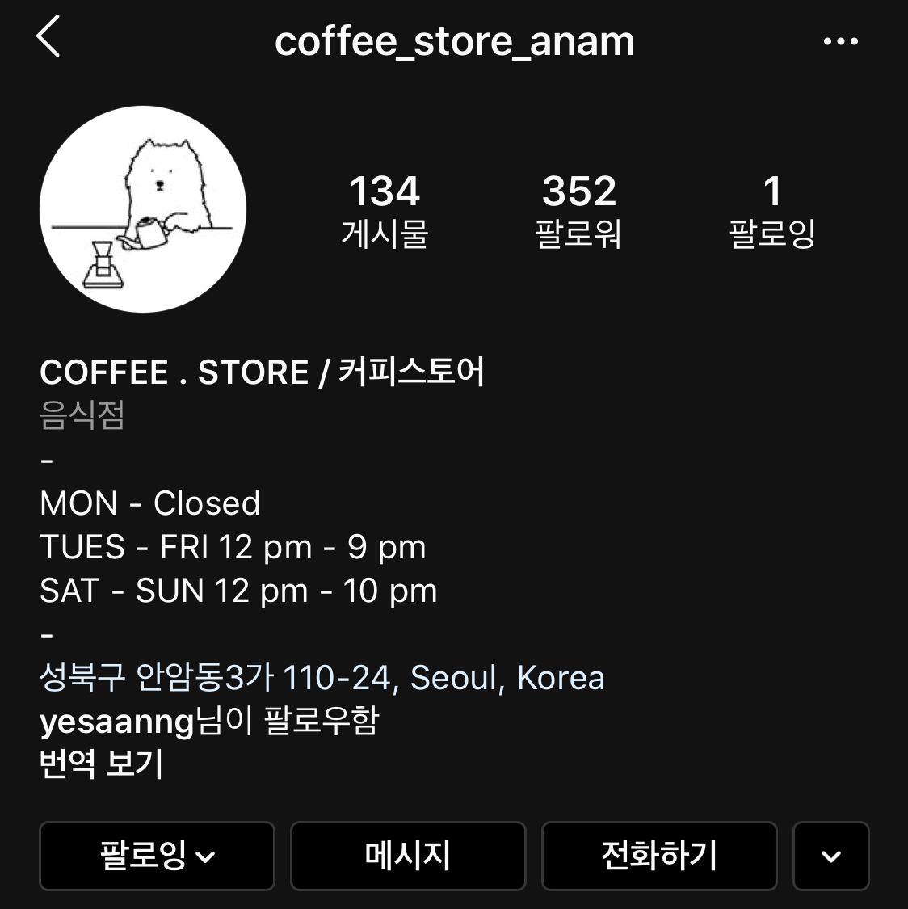

- - - - - - - - - - - - - - - - - - - - - - - - - - - - - - - - - - - - - - - - - - - - - - - - - - - - -
My Favorite
Music Food Place
 



The moon song - her Lam Pizza Han - river
안녕하세요. 고려대학교 디자인조형학부 산업정보디자인학과 3학년에 재학 중인 박수민 입니다.
멋사 너무 재밌네요. 하하하. 곧 투표날이네요. 휴강 개꿀! 참고로 제 인생 첫 투표에요. 두근두근.
할말 없어서 하는 얘기지만 모두 투표합시다. 투표율 높여야죠! (사실 그냥 투표해보고 싶어서...)
한 세네줄 정도 쓰면 분량이 딱 예쁘게 나올꺼같은데 이정도면 되려나 모르겠네요. 이제 됐다.ㅎ
- - - - - - - - - - - - - - - - - - - - - - - - - - - - - - - - - - - - - - - - - - - - - - - - - - - - -
My Favorite
Music Food Place


The moon song - her Lam Pizza Han - river
이제 진짜 쓸말이 없는데 overflow칸을 만들어 버렸으니 좀 더 힘을 내서 써볼게요...
저는 보문역과 안암역 사이의 대광초교 쪽에 삽니다! 그러니깐 보문역 주변 갈 만한 곳 tmi를 써볼께염
coffee.store
성북천 바로 앞에 분위기 깡패 카페가 있어요. 커피가 엄청 맛있진 않지만 과제하기 좋은 분위기에요. 그리고 거기 레몬티가 생 레몬이 통째로 들어가서 진짜 맛있어요.
레몬 케이크도! 추천합니당. 그 쪽 와서 부르면 나갈께요. 참살이에서 부르면 안갑니다. 너무 멀어여. 그럼 이제 스크롤 밑으로 내리세요.
한상차림밥상

여긴 한번도 안가봤는데 가성비 좋고 반찬도 엄청 많이 나온데요! 사실 한 번 갔다가 재료소진으로 못 먹었던 적이 있습니다.ㅠㅠ
나중에 꼭 가보시길~ 한식이여서 부모님과 마땅히 갈 곳 없을 때 가도 괜찮을듯?!
지금까지 overflow 써보고 싶어서 그냥 넣은 내용이에요! 그냥 무시하구 넘어가셔두됩니다ㅎㅎ